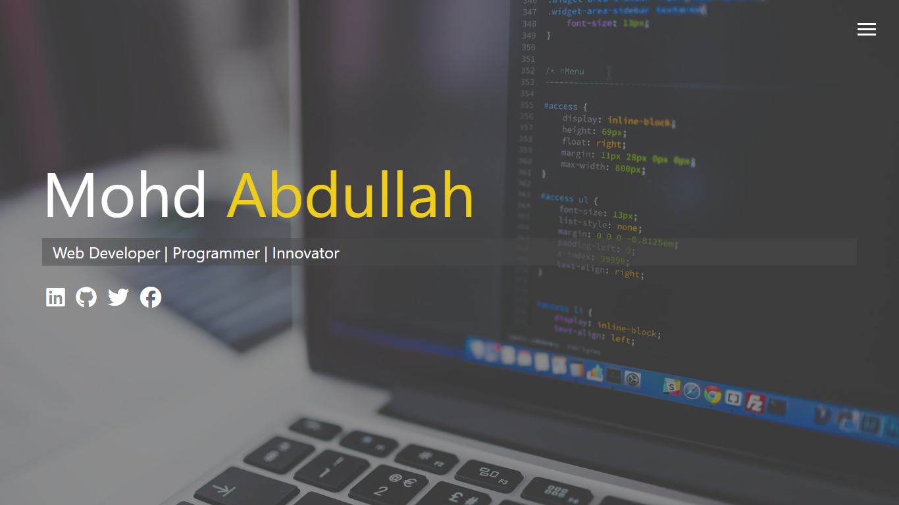
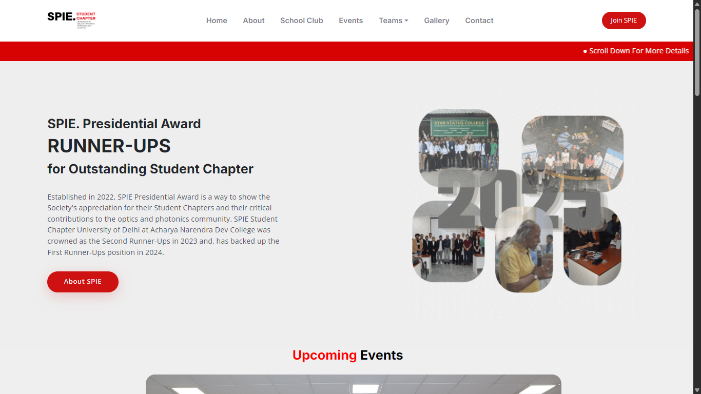
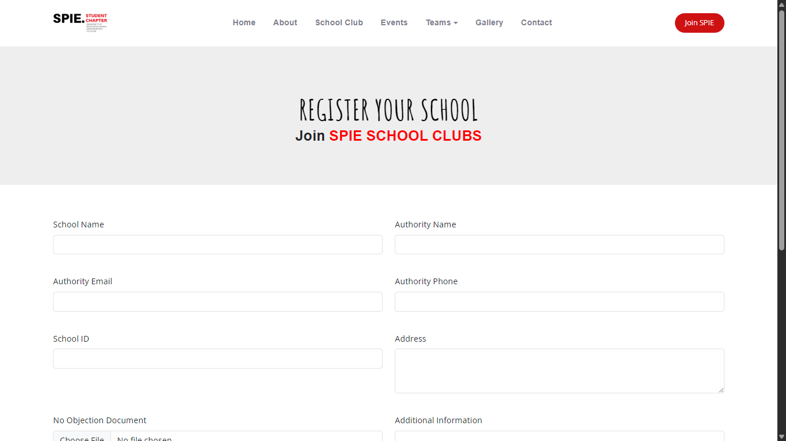
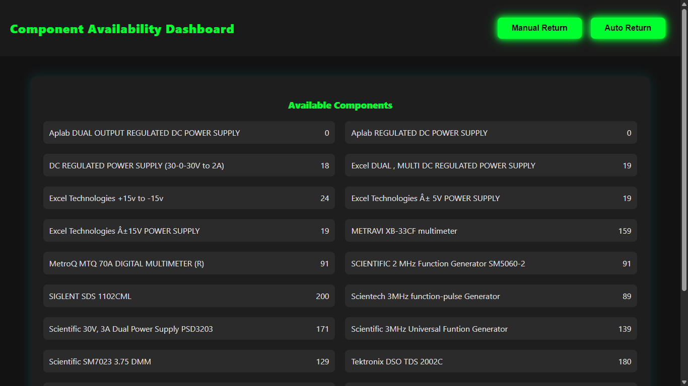

My Work
Check out some of my projects...

A modern, responsive personal portfolio made with HTML, Tailwind CSS, and JavaScript. Includes project showcase, contact links, and smooth UI animations. Fully deployed and open-source.
Developed the frontend UI for the SPIE Student Chapter using Tailwind CSS and HTML. It features a responsive layout, dynamic sections, and clean modular design for easy scaling.
Built the backend using Django for the SPIE portal. Handles student registration, event posting, admin authentication, and database operations through a custom dashboard system.
Designed a user-friendly interface for lab component tracking usingHTML, CSS, and JavaScript. Enables smooth data viewing, submission logs, and search for all lab-related records.